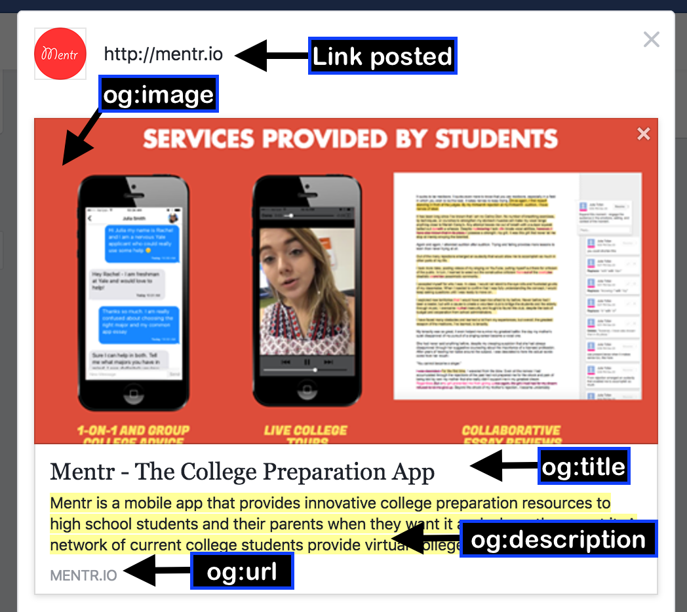
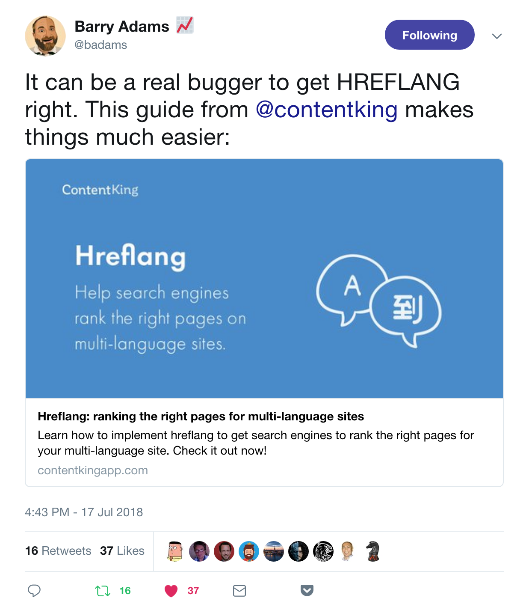

Open Graph [FACEBOOK] And Twitter Card
- When someone shares a website on Facebook / Instagram / Linkedin / Twitter , the preview of that website appears in post as a card.
Example:
Facebook Open Graph :

Twitter Card :

- If we want that instead of default title and description used for Search Engine, a custom title, description and images should be shown when website is shared in social media, then we have to include Open Graph[For Facebook, Instagram, Linkdin etc...] & Twitter Card [For Twitter]
- All these codes reside inside <head> tag
Note : Usually Default image fetched fromwebsite is primarily the LOGO, this makes using this tags more appealing.
Open Graph [Facebook] & Twitter Card Code
- Search Open Graph/ Twitter Card in Google.
- Copy Sample code and paste in head tag.
- Change the title, description, image, website address etc.. accordingly.